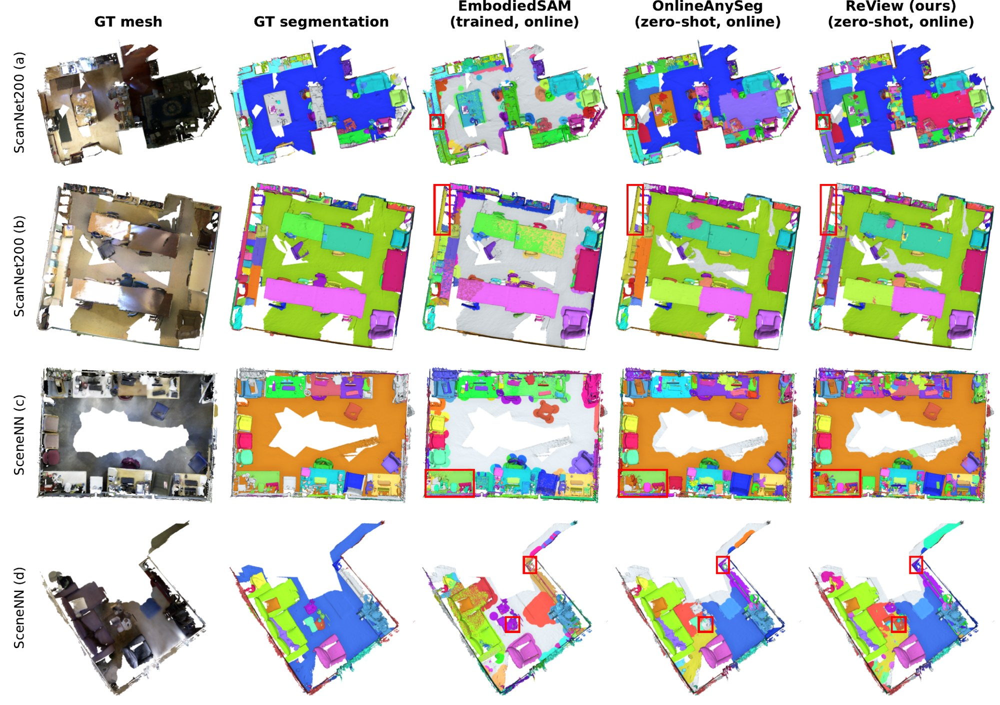

Segmentation evolving during scanning on four scans, with the ground truth, OnlineAnySeg and
ReView side by side. Each panel uses only the frames observed so far. Matched predictions share ground-truth
colours (display only); lighter colours indicate lower confidence. Ground truth is used only for reference,
colouring, and scene and example selection.
Overview
Abstract
TL;DR ReView is a training-free framework that revisits accumulated instances at
query time using only past observations. It refines instances, ranks them by observation-consistency confidence
and recovers missed objects, without changing the online association process.
Online zero-shot 3D instance segmentation identifies objects during scanning without training on 3D instance
annotations. Existing methods incrementally associate 2D masks to build 3D instances. However, segmentation
errors and missed instances can persist as observations accumulate. Moreover, some methods assign identical
confidence scores to all instances, leaving reliable and unreliable instances indistinguishable. We observe that
masks from different past viewpoints can reveal errors in accumulated instances, while their agreement with an
instance indicates its reliability. We therefore propose ReView, a training-free framework that revisits
accumulated instances at query time using only observations collected so far, without changing the online
association process. For each instance, ReView finds the best-matching 2D mask in each valid past view. In
view-consensus refinement, these masks provide votes on visible points from views with sufficient
agreement, removing wrongly included points and adding missing ones before connectivity cleanup. Reusing the same
matches, ReView averages agreement across all valid views to obtain an observation-consistency
confidence for ranking instances. To recover missed objects, track-based recovery adds candidates
from temporal mask tracks after overlap checks and duplicate suppression. Experiments on ScanNet200 and SceneNN
show that ReView achieves the highest AP among the compared online and offline methods.
+2.42 AP
over the OnlineAnySeg front end on ScanNet200 (18.96 → 21.38), full input
+2.63 AP
over the OnlineAnySeg front end on SceneNN (18.12 → 20.75), full input
24.50 → 40.64
C-AP50 on ScanNet200 when instances are ranked by observation-consistency confidence
All numbers: full input, OnlineAnySeg's released evaluation script (Tables 1–2 of the paper).
Approach
Revisiting past views at query time
ReView uses past views to refine and rank online instances.
(a) The TV instance (orange) incorrectly includes points from the plant.
(b) Of the 50 voting views that see the plant, only 4 include it in their best-matching 2D masks.
(c) View-consensus refinement removes the wrongly included points (red) and adds missing points (blue).
(d) The 35 displayed instances, each with at least 800 points, initially have identical scores.
(e) Ranking by observation-consistency confidence Q places 10 of the 13 correct instances
(indigo, IoU ≥ 0.5 with ground truth) among the top 17. Ground truth is used only to label the bars.
Overview of ReView. (a) The online front end lifts and associates 2D masks to build the instance
bank. (b) At query time t, ReView uses only frames f ≤ t and their masks:
(1) best-matching masks in valid views provide IoU agreement over visible points;
(2) views with sufficient agreement vote point-wise to refine instances, followed by connectivity cleanup;
(3) mean agreement over all valid views gives the confidence Q;
(4) online mask tracks yield recovery seeds, filtered by overlap checks and seed NMS.
(c) Refined bank instances score 1 by default, or (1+Q)/2 with optional confidence ranking; recovered
seeds rank below all bank instances.
1
View-consensus refinement
Best-matching 2D masks from past views vote on visible points, removing wrongly included points and adding
missing ones before connectivity cleanup.
2
Observation-consistency confidence
Reusing the same matches, ReView averages mask agreement across all valid views to rank instances.
3
Track-based recovery
Temporal mask tracks provide candidates for missed objects, admitted after overlap checks and duplicate
suppression.
Experiments
Full-input results
Method
Online
Zero-shot
ScanNet200
SceneNN
AP
AP50
AP25
AP
AP50
AP25
OVIR-3D‡
–
✓
14.4
27.5
38.8
12.3
24.4
34.6
MaskClustering‡
–
✓
19.7
36.4
51.4
16.3
31.7
46.2
EmbodiedSAM
✓
–
14.80
36.57
64.43
11.18
30.99
61.48
SAM3D†
✓
✓
9.63
23.75
49.85
10.05
23.26
47.95
Stream3D§
✓
✓
19.18
34.31
53.44
16.27
30.43
47.25
OnlineAnySeg
✓
✓
18.96
36.77
55.63
18.12
36.17
59.86
ReView (ours)
✓
✓
21.38
41.05
62.51
20.75
39.33
62.43
ReView + conf. (ours)
✓
✓
19.34
40.31
63.12
18.97
39.82
62.06
Evaluation uses OnlineAnySeg's released script. Online methods are our reruns on the same input
sequences; ReView + conf. ranks the same masks by confidence. ‡: offline, reported by OnlineAnySeg with the
same script. †: SAM3D without its optional over-segmentation ensemble. §: released code with our masks;
uses the complete scene mesh and is included only as a full-input reference.
Bold / underline: best / second best per column. Results with an
alternative evaluation protocol are reported in the paper.
Qualitative results
Visualizations
Segmentation during scanning on a ScanNet200 scene at 25–100% input (top view).
Predictions are displayed on the observed portion of the ground-truth mesh, with matched instances sharing
ground-truth colours and unlabelled surfaces shown in grey. The ground-truth row is restricted to the shared
front end's reconstruction for visualization only.

Full-input segmentation comparison on ScanNet200 and SceneNN scenes (top view, ceiling removed).
Predictions are mapped to the ground-truth mesh. Matched predictions share ground-truth colours (Hungarian
matching, IoU ≥ 0.25); grey denotes unlabelled surface. Red boxes highlight objects that ReView segments
more accurately than either baseline.
Citation
BibTeX
@article{zhang2026review,
title = {ReView: Online Zero-Shot 3D Instance Segmentation
by Revisiting Past Views},
author = {Zhang, Yuanyang and Yao, Li and Lin, Yijie and Wang, Xinchao},
journal = {arXiv preprint},
year = {2026}
}
The arXiv identifier will be added once the preprint is available.